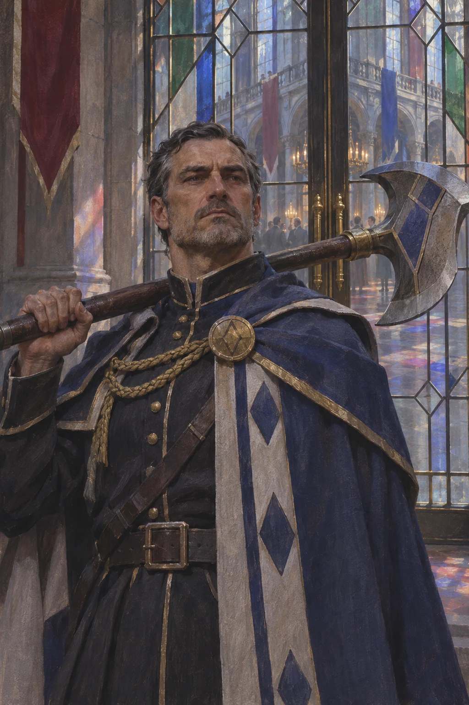

Вернуть стёкла домов, вывести людей из списков через Тихий сад и решить, что сказать генералу о четырёх часах утра.
Иветта СоммГелена ШирРостислав ПелльОрен Вальт

Зенон Карх
Пар Синих бань оседает на синих стёклах высоких окон, и свет в сухом зале отдыха кажется вечерним даже днём. Мыться сюда давно не ходят: бани закрыты для купания и открыты для тех, кому нужно тихо уехать. На лавках вдоль стены — дорожные мешки, перевязанные бечёвкой, и возле каждого — человек, который делает вид, что пришёл помыться: немолодой писарь с футляром для бумаг, женщина в чужом плаще не по росту, кто-то, кто прячет лицо в полотенце. Пахнет мятой, мокрым деревом и мылом; в парилке за стеной кто-то нарочно громко поёт. Иветта Сомм сидит у стола в банном халате поверх дорожного платья. Перед ней синее стекло и шесть чистых пропусков. Она поднимает один к свету и говорит, не глядя на вас: «Шесть человек из чужих списков. Сегодня — через Тихий сад».
Подготовка и роли
Вечер стёкол и выхода. Синее стекло Иветта отдаёт только отряду и только после сада (сделка сц. 1); Кассии — никогда. Медное стекло, если оно у Кассии, возвращается к Гелене, когда она видит поля со строкой о причалах (Нить −1); сделка сц. 2 отдаёт его отряду. Тайны: прошлое Гелены (Причалы −2, один раз); торговля Иветты (Третья дверь −2, один раз); поля: Нить −2 только при первом показе лидеру, дальше лишь +1 дому лидера. «Белые нитки у сада» — встреча вечера 6, необязательная: цель — увести пары (на M5–M8) в конце раундов 2–4; караул людей Иветты не бьёт и сдаётся, когда упала половина. Мирные пути открыты всегда. Ростислав: спасённый уходит из сада с последней парой; взятого Орен отдаёт в торге сц. 4, и Иветта выводит его ночью отдельно. «Орен предупреждён» — один из четырёх фактов, которые ведущий читает перед 22:00 ночи знамён. Кассия узнаёт о кордоне от своих людей (и что поля читали, если их показали сержанту); о разговоре с Ореном — только в 01:00, по арестам своих офицеров. Угроз от неё до вечера 7 нет. В конце вечера ход города: Нить +1. Ориентир: А 6 6 3 4 4 0; Б 4 2 6 6 6 5 (все стёкла у отряда, Орен предупреждён); В 6 4 3 6 5 1 (торг с Ореном, Орен предупреждён).
Илан Корвин: ведёт разговор с Иветтой — она когда-то вывела его самого, и час выхода он узнаёт без броска.
Зарина Мойл: приносит Гелене квитанции и копию просьбы Нити и решает, выносить ли прошлое Гелены на собрание.
Надир Ро: в Знамённом дворе спрашивает Зенона прямо и ведёт торг с Ореном как бывший пристав.
Тера, Ефрем и Таисия: в «Белых нитках у сада» держат восточные ворота — от них зависит, уйдёт ли пара.
Матиас Оберт (седьмой игрок): свидетельствует торг с Ореном: обещание, данное при нём, засчитывается +1 сразу. Ключевых путей не держит.
Ора Милл (восьмой игрок): знает балкон и видит, к какому окну поднимают знамёна; ключ от балкона — у Зенона. Ключевых путей не держит.
Сцена 1 · 40 минут
Я вывожу (Третья дверь)
Иветта поднимается, подбирает полы халата и кивает на заднюю комнату. Там тесно и сухо, на крюках висят чужие плащи, на полке лежат сложенные дорожные карты. Иветта раскладывает пропуска на столе веером и пересчитывает их кончиком пальца; синее стекло ложится в середину. Сквозь щель приоткрытой двери виден вход в бани: у самого порога терпеливо стоит человек с белой ниткой на рукаве и молочным стеклом на жетоне. Он замечает ваш взгляд и вежливо, почти ласково, кивает, будто вы условились встретиться именно здесь.
Синие бани, задняя комната; в парилке за стеной кто-то нарочно громко поёт. Иветта раскладывает шесть пропусков, как карты: «Я не спасаю. Я вывожу». Шестеро из списков уходят сегодня через восточные ворота Тихого сада; Ростислав, если он у Иветты, — с последней парой. Она просит отряд встать у сада, пока проводник ведёт людей к каналу. Синее стекло лежит между пропусками: «Синее стекло — моё слово. Его не продают, его отдают». Отряд получит его после сада. У дверей бань ждёт сержант Нити: белая нитка на рукаве, молочное стекло на жетоне. Он вежливо, почти ласково отводит одного из вас в сторону, пока люди на лавках делают вид, что не слушают: «Её прошлое можно почистить. Скажите людям в банях, кому она продавала сведения». Вслух: сделка — «Третья дверь: чисел пока нет, стекло и +1 после сада». Разоблачение — «Третья дверь −2 — торговля Иветты вышла на свет».
Выборы
Сделка: встать у сада в сц. 3; синее стекло отряду и «ТД +1» по исходу «Белых ниток у сада».
Разоблачить торговлю Иветты, как просит сержант: «ТД −2» (разоблачение торговли Иветты, один раз).
Отказаться: чисел сейчас нет; если отряд не придёт в сад, в сц. 3 «ТД −1».
Проверка и путь без броска
Убеждение Сл 12: Иветта называет час выхода, и отряд встанет у ворот раньше кордона. Без броска: Илан: «Ты выводила меня, когда я сам не знал, что ухожу», — и она называет час ему.
Если не получилось
Проводник, пересчитывая мешки, сам называет час выхода. Сделка в силе, если отряд её принял.
Сцена 2 · 40 минут
Теперь отдают меня (Причалы)
На Медной пристани сегодня тихо не по-праздничному: у столба навеса сложены канаты и пустые носилки, лодки у нижних ступеней стоят без гребцов, и только чайки спорят над водой. Доска объявлений вытерта дочиста, на ней ни смен, ни цен. Носильщики сидят под навесом плотно, плечом к плечу, как на собрании, хотя собрания никто не созывал. Гелена Шир стоит у доски, скрестив руки, и слушает старика-лодочника, который что-то долго ей объясняет. Она дослушивает его до последнего слова, кладёт руку ему на плечо и только потом поворачивается к вам: «Ну. Говорите при всех».
Медная пристань, навес собраний; пахнет смолой и мокрыми канатами, у столба сложены канаты и пустые носилки. Гелена Шир слушает до конца; медное стекло на шнурке у неё, если его не отдали Кассии. Положите янтарь на поля: «Шир оставить. Причалы — лист от обходной группы». Рядом просьба Нити на бланке с белой ниткой: имена старших «для защиты». Гелена сравнивает и говорит: «Было. Я отдавала. Теперь отдают меня». Вслух: «Причалы +1 — Гелена увидела руку куратора»; если поля показывают лидеру впервые, ещё «Нить −2». Если медное стекло у Кассии, оно возвращается к Гелене: «Нить −1 — стекло взяли ради ареста». Носильщики под навесом слушают. Гелена кивает на них: «Хотите — скажите им, что я делала восемь лет назад. Я не держу». Вынести её прошлое на собрание — «Причалы −2». Обещать предупредить её людей в ночь знамён — сделка: медное стекло отряду.
Выборы
Показать поля: «ПР +1»; первый показ — «НИ −2»; стекло у Кассии — вернулось, «НИ −1».
Разоблачить прошлое Гелены перед собранием: «ПР −2» (разоблачение прошлого Гелены, один раз).
Сделка: обещать предупредить её людей в ночь — медное стекло отряду.
Проверка и путь без броска
Убеждение Сл 13: собрание носильщиков слушает отряд, а не бланк Нити, и Гелена отдаёт стекло по сделке. Без броска: квитанции Зарины — отряд платил носильщикам, собрание это помнит; копия просьбы Нити лежит в конторе закупщиков.
Если не получилось
Собрание ничего не решает. Медное стекло остаётся у Гелены — на её стороне, а не у Кассии.
Сцена 3 · 40 минут
Белые нитки у сада (Белая нить)
Гравий Тихого сада в сумерках кажется ещё белее, и каждый шаг по нему звучит, как пересыпанная соль. На скамьях, стоящих лицом друг к другу, никто не сидит. У восточных ворот, за которыми плещет канал, ждут люди с дорожными мешками, по двое, не разговаривая; один всё поправляет лямку, другая держит пропуск двумя руками, как свечу. Иветта стоит чуть в стороне и пересчитывает их, глядя сквозь синее стекло в ладони. С запада, по главной аллее, гравий начинает шуршать в такт: идут копья, круглые щиты, на жетонах тускло светится молочное стекло. Передний поднимает руку.
Тихий сад, сумерки, на скамьях лицом друг к другу никто не сидит. Шестеро с мешками стоят парами на M5–M8, отряд — у самых ворот, восточнее; спасённый Ростислав — в последней паре. Иветта считает их по синему стеклу в ладони. С запада по аллее идёт кордон Нити: копья, круглые щиты, жетоны с молочным стеклом. Сержант поднимает руку: «Обходная? Отойдите. Приказ — забрать по списку». Встал отряд между — встреча «Белые нитки у сада»: в конце раундов 2, 3 и 4 в ворота уходит пара; караульный у ворот — пара задержана. Мирно: сказать, что куратор сняла кордон (ложь); показать сержанту поля — «ваших в четыре бросят на армию»; отдать Ростислава. Сержант смотрит на янтарь: «Приказ был — забрать, а не драться с обходной». По исходу: бой выигран — «Нить −1»; эхом в конце сцены: ушли две-три пары — «Третья дверь +1», синее стекло отряду; задержаны две — «Третья дверь −1».
Выборы
Встать между и драться: победа — «ТД +1», «НИ −1», синее стекло отряду.
Солгать сержанту, что куратор сняла кордон: «ТД +1», стекло отряду; в сц. 7.4 ложь раскроется — «НИ +1».
Показать сержанту поля: он уводит людей; «ТД +1», стекло отряду; Кассия узнаёт, что поля читали.
Отдать Ростислава: «ТД −1»; он у Нити, и в ночь знамён его нет.
Проверка и путь без броска
Внимательность Сл 12: кордон идёт двумя улицами, и отряд встаёт у ворот первым. Без броска: проводник Иветты слышит копья на мостовой и говорит, откуда идут. Отряд не пришёл в сад — «ТД −1».
Если не получилось
Числа по встрече: задержаны две пары и больше — «ТД −1», Ростислав у Нити; ушли две-три — «ТД +1» и синее стекло отряду.
Сцена 4 · 40 минут
Значит, в четыре (Армия)
Знамённый двор в этот час краснеет: знаменосцы поднимают древки к пустому балкону Палаты напротив, и полотнища на миг закрывают его стекло алыми лоскутами. Генерал смотрит на это с помоста, заложив руки с перчатками за спину. За его плечом стоит майор в парадном плаще знаменной стражи, с секирой на плече, и не меняется в лице, даже когда барабан сбивается с такта. Адъютант с записной книжкой держится рядом и, кажется, записывает даже паузы. Генерал оборачивается на ваши шаги и улыбается, как улыбаются союзникам: «А. Люди госпожи Аммер».
Знамённый двор. Орен Вальт смотрит с помоста, как знаменосцы поднимают древки к пустому балкону и красные полотнища на миг закрывают его стекло; за его плечом Зенон Карх в парадном плаще. Орен принимает вас как людей Кассии, адъютант за его спиной записывает каждое слово: «Я прошу немногого: читать то, что написано». Положите перед ним поля под янтарём: у штаба такого стекла нет. Он читает строку 04:00 дважды, потом снимает перчатку и кладёт ладонь на лист: «Значит, в четыре». Вслух: «Армия +1 — генералу показали поля»; если впервые, ещё «Нить −2». Орен предупреждён. Или торг: вы обещаете прочесть его приказ — «Армия +1, сделка»; Орен вычёркивает из списка Зала два имени, которые назовёт стол, и отдаёт Ростислава, если тот у Седьмой комнаты: Иветта выводит его ночью отдельно. Можно и то и другое. Зенон, не поднимая глаз: «По бумаге. Только по бумаге». Промолчать — чисел нет.
Выборы
Показать Орену поля: «АР +1», первый показ — «НИ −2»; Орен предупреждён, удар Нити в 04:00 не удастся.
Торг: обещать прочесть его приказ — «АР +1»; два имени вычеркнуты из списка Зала, Ростислав отдан, если у Седьмой комнаты.
Ничего не говорить: чисел нет, Орен по-прежнему уверен в Кассии.
Проверка и путь без броска
Проницательность Сл 13: Орен не знает строки Зенона «обходную группу разоружить и держать у балконных дверей» — подписал не читая. Без броска: Надир спрашивает Зенона прямо, тот кивает.
Если не получилось
Орен встаёт с помоста: «Подумайте до знамён». Ничего не сказано — чисел нет.
Имена для защиты
Бланк Белой нити с белой ниткой, продетой в угол, — так Нить метит свои бумаги. Вежливая просьба к старшей причальных товариществ, написанная ровным писарским почерком, а ниже — длинный столбец пустых строк для имён.
Что можно установить
Белая нить просит Гелену Шир дать имена старших причальных товариществ «для защиты в ночь знамён». На янтарных полях листа третьего стоит «Причалы — лист от обходной группы»: по этому листу старших причалов возьмут в аресты 01:00 ночи знамён. Защиты нет — есть список.
Получение
Сц. 3.1: Гелена показывает бланк сама: «Имена — это люди, а не защита». Без броска. Что имена пойдут в аресты, видно при сверке с янтарными полями (сц. 6.2).
Запасной путь
Копия просьбы лежит в конторе закупщиков причалов: Зарина находит её по своим квитанциям («Квитанции закупщиков») без броска.
Янтарные поля
Бледно-жёлтые строки на полях листа третьего: без янтарного стекла это просто полосы, будто бумагу провели по воску. На свету они чуть блестят, на ощупь гладкие, как сургуч; разобрать можно только длину строк — их много, и легли они плотно, вдоль каждого часа.
Что можно установить
Рукой Кассии Аммер, янтарём: у 21:00 — «пусть входят»; у полуночи — «отставка канцлера? Мне не говорили»; у 01:00 — Галерею отдать, как обещано; у приложения — Нер и Шир оставить, «Причалы — лист от обходной группы»; у 03:00 — не мешать. 04:00 — «наш час»: седьмой стол и резерв («зелёное стекло — от обходной группы») берут генерала и майора под стражу «без крови». 05:00 — обходная группа читает её текст: «Знамёна — Белой нити до восстановления Палаты. Мандат спасения», восстановление не датировать. «Пелля после ночи — на дальнюю станцию». Почерк тот же, что во вчерашнем приказе: угловатое «К.» с хвостом вниз, «до рассвета». Куратор знала о заговоре с первого листа и вела группу к своему чтению.
Получение
Сц. 5.1: Ростислав отдаёт янтарное стекло из подкладки («Янтарное стекло связного») — сразу в мастерской Иветты, если его спасли на Медном спуске, или за обещание вывезти его до знамён во Знамённом дворе; Тера читает строка за строкой без броска; выдать «Янтарные поля».
Запасной путь
Копировальное янтарное стекло Фабиана: его бегунок приносит стекло в начале сц. 5.1 вместе с журнальной копией приказа; без броска. Или сц. 5.2: Кассия снимает кулон: «Хотите прочесть? Читайте. Это ничего не меняет».
Изменения после решений
Если Орен видел поля (Орен предупреждён) → Отметьте на схеме. В 01:00 ночи Седьмая комната берёт офицеров Нити; удар Нити в 04:00 не удаётся при любых числах.
Если Ростислав у Нити или выведен → У Нити — в ночь знамён его нет. Выведен (с последней парой или, после торга с Ореном, ночью Иветтой) — уехал южной дорогой, обещание вечера 5 исполнено.
Если Торг с Ореном заключён → Перед 22:00 депутатов в списке Зала на два меньше: 4 − 2 (и −1, если Юла уйдёт в вечер 7; не меньше одного).
Если Отряд солгал сержанту у сада → В сц. 7.4 Кассия раскрывает ложь: Нить +1.
Если Конец вечера (ход города) → Караулы Нити выходят на улицы: Нить +1 (не выше 6).
Завершение вечера
Над Тихим садом гаснет последний фонарь, и у восточных ворот слышно только канал. Назовите ход города: «Нить +1 — караулы на улицах». Белые нитки на рукавах в каждом переулке у Палаты, молочное стекло на каждом жетоне, и все окна смотрят на балкон. На Знамённом дворе до полуночи стучат молотки: к помосту прибивают последние ступени. Завтра — последняя репетиция, и обходной группе идти по кругу в последний раз.